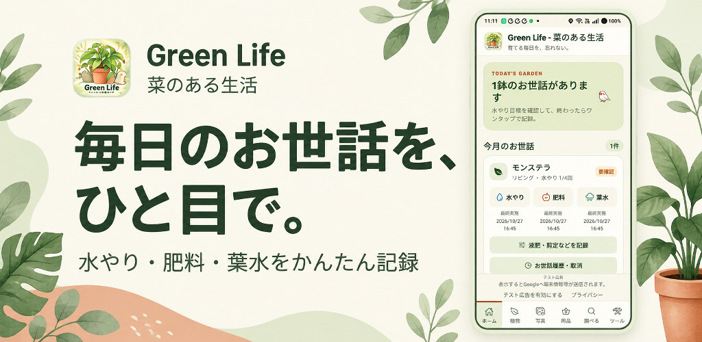
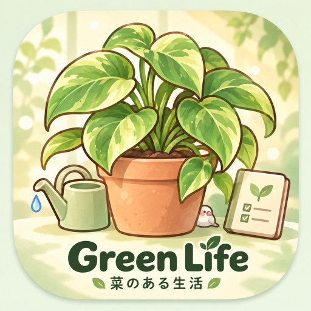
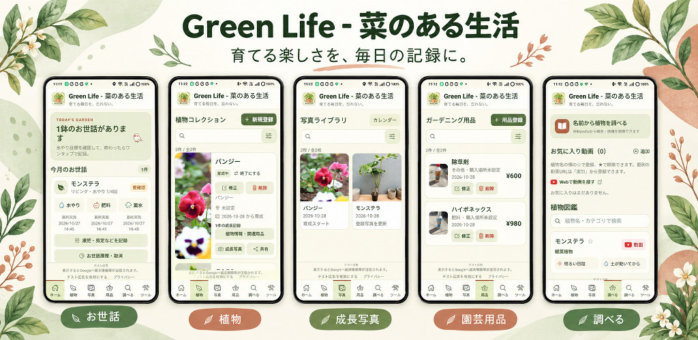
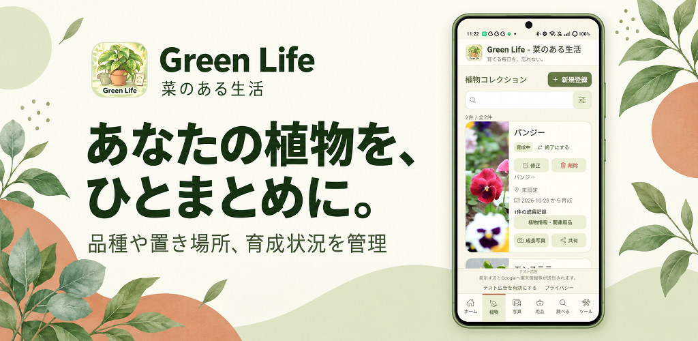
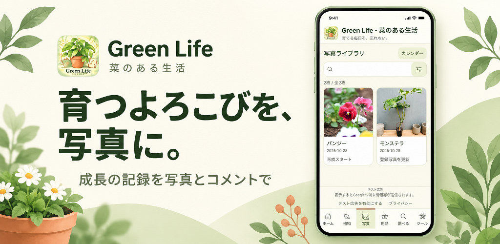
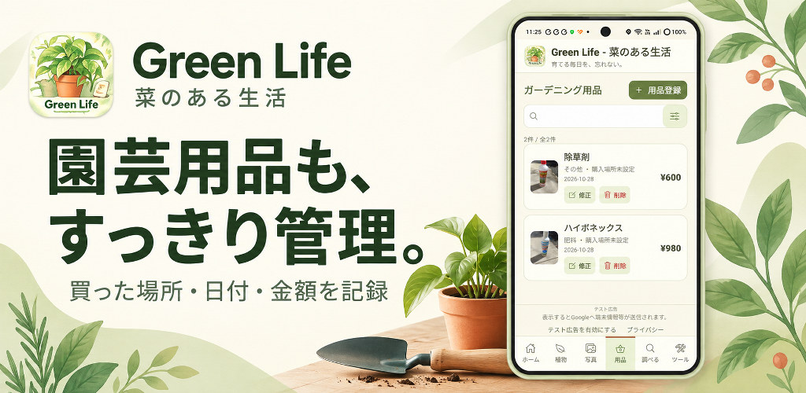
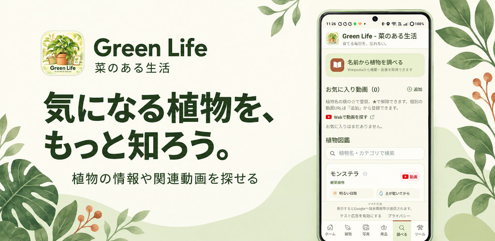

- 月ごとの水やり目標を植物に合わせて管理
- 液肥・剪定など、お世話の項目を自分で追加
- 履歴で実施日時を確認し、間違えた記録は取り消し

GARDENING & GROWTH LOG
菜のある生活
育てる楽しさを、毎日の記録に。
水やりをした日、初めて花が咲いた瞬間、新しく買った園芸用品。花・観葉植物・家庭菜園と過ごす毎日を、写真や記録で残せる園芸管理アプリです。






通知は「毎日」「曜日指定」「1回のみ」から設定。曜日指定では必要な曜日を複数選べます。追加した予定はリストで確認できます。
ベランダの小さな鉢から、お庭の花や家庭菜園まで。あなたのペースで、みどりのある暮らしを楽しみましょう。
Android版・公開準備中
画面は開発・テスト版のものです。通知には端末での許可が必要です。植物情報の取得や動画検索などにはインターネット接続が必要です。